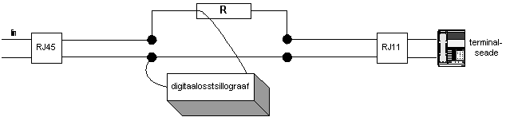
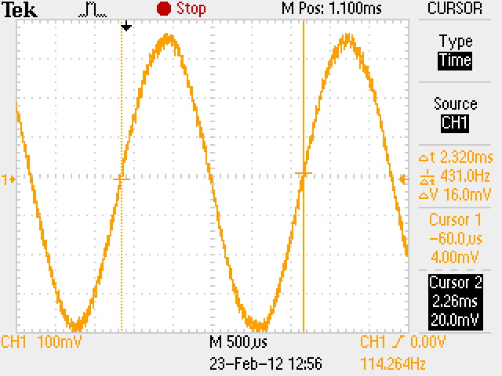
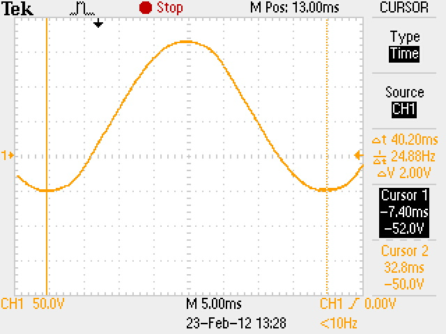
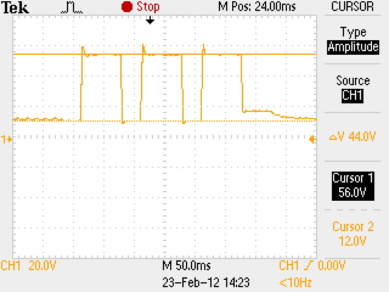
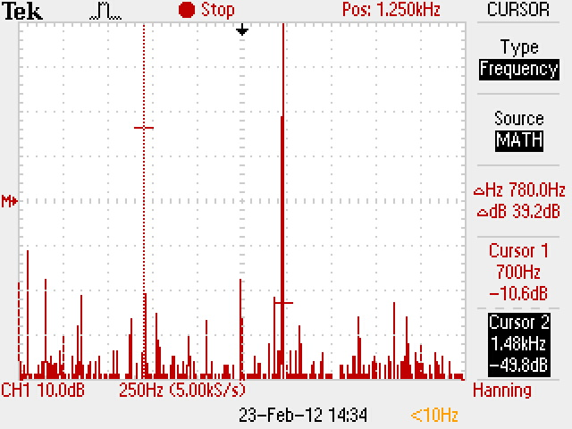
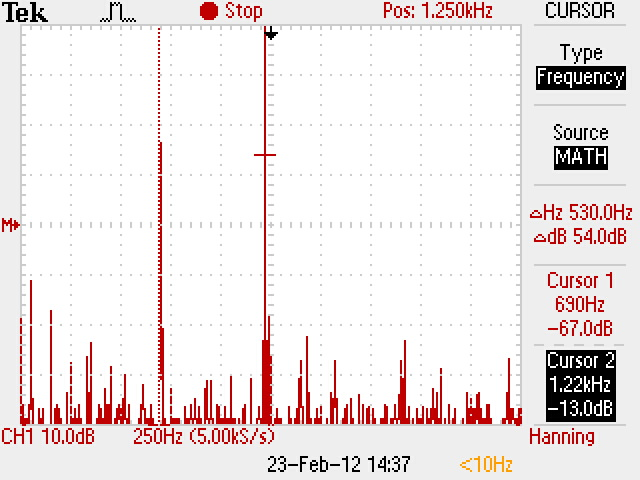

Sidevõrgud labor #2
Analoogliidese parameetrite mõõtmine

Kasutasime multimeetrit (voltmeetri režiimis), et skeemil toodud punktides alalispinge mõõtmised teostada.
| Terminaliseadme seisund | U1 [V] | U2 [V] | U2 [V] |
|---|---|---|---|
| Rahuseisund | 55 | 55 | 0 |
| Hõiveseisund | 12.8 | 7.9 | 4.9 |
Arvutused
Mõõtmistulemuste kontroll: U1 = U2 + U3
55 + 0 = 55
7.9 + 4.9 = 12.8
Ostsillograaf
Kasutasime digitaalostsillograafi, et joonisel näidatud punktis mõõtmisi teostada.
Valimistooni parameetrite mõõtmine
| Pinge | 16,0mV |  |
|---|---|---|
| Periood | 2,320ms | |
| Sagedus | 431.0Hz |
{kind=link}
Kõne uurimine
Tekitasime aktiivse kõne ning kaks kestvat heli (mille siis digitaalostsillograafiga salvestasime). Helideks olid kõrge vile ning madal vokaal.
{kind=link}
{kind=link}
Kutsesignaali uurimine
Helistasime ühelt telefonilt teisele, uurisime tekkinud kutsesignaali.
| Graafik |  |
|---|---|
| Pinge | 2.0V |
| Sagedus | 24.88Hz |
| Periood | 40.20ms |
{kind=link}
Impulssvalimine
Telefon impulssrežiimis. Vajutasime klahvi "3" ning salvestasime tekkinud signaali. Graafikult on näha liinil liikunud kolm valimisimpulssi.
| Graafik |  |
|---|---|
| Ühe numbri pulssimisperiood | 266.0ms |
| Üksiku valimisimpulsi pikkus | 96 ms |
| Ühenduse kestus | 26ms |
| Katkestuse kestus | 30 ms |
| Pinge abonentliini ühenduse osas | 44.0V |
| Pinge abonentliini katkestuse osas | 56.0 V |
{kind=link}
Toonvalimine
Tekitasime aktiivse ühenduse kahe telefoni vahel ning vajutasime ühte klahvi (telefon toonrežiimis). Graafikutelt on selgelt näha nupuvajutusest tekkivad signaalid.
| Graafik |  |  |
|---|---|---|
| Valitud number | 3 | 1 |
| Jooniselt leitud esimene sagedus | 700Hz | 690 |
| Jooniselt leitud teine sagedus | 1,48kHz | 1.22 kHz |
| Tehtud järeldus järgnevast tabelist | 3 | 1 |
{kind=link}
{kind=link}
Kokkuvõte
Labori käigus õppisime tundma telefoniliini toimimist ja erinevaid töörežiime. Mõõtmisi viisime läbi multimeetri ja ostsillograaf abil. Ostsillograafi abil oli liinil näha liikuvate signaalide muutumine ajas teatud sündmuste toimumisel.